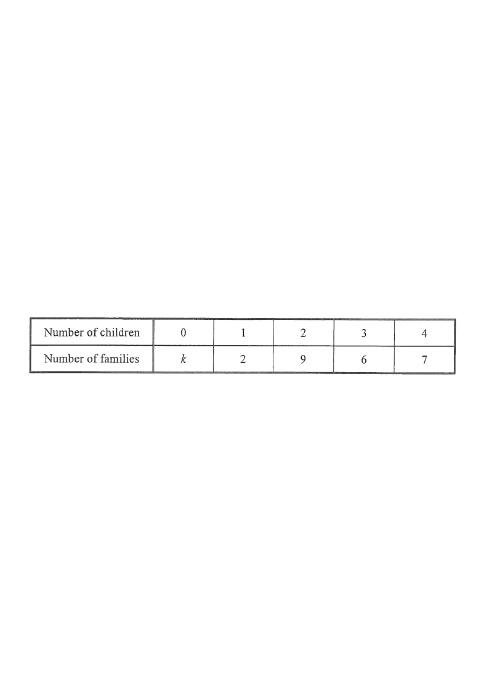

Step 1: the given data — $k$ is a positive integer.
The following table shows the distribution of the numbers of children of some families:
| Number of children | 0 | 1 | 2 | 3 | 4 |
|---|---|---|---|---|---|
| Number of families | $k$ | 2 | 9 | 6 | 7 |
It is given that $k$ is a positive integer.
(a) If the mode of the distribution is 2, write down
(i) the least possible value of $k$;
(ii) the greatest possible value of $k$. [2 marks]
(b) If the median of the distribution is 2, write down
(i) the least possible value of $k$;
(ii) the greatest possible value of $k$. [2 marks]
(c) If the mean of the distribution is 2, find the value of $k$. [2 marks]

Families: $k+2+9+6+7 = k+24$.
Since $k$ is a positive integer, $k\ge 1$.
Total families matters for the median position later.
The mode is the value with the highest frequency.
The frequency of "2" is $9$.
For "2" to be a mode,
no other count may exceed $9$. The highest other frequency is $7$ (for 4 children),
and $k$ must satisfy $k \le 9$.
Since $k\ge 1$, the least value is $k=1$.
$k=1$ works: if $k=1$ the frequencies are $1,2,9,6,7$ — the largest is 9 at value 2.
We need $k$ to be at most $9$ (so that the frequency of 2 stays the highest,
allowing a tie at most).
So $k$ can be as large as $9$,
giving frequencies $9,2,9,6,7$;
"2" is still a mode.
The greatest value is $k=9$.
If $k \ge 10$,
the largest frequency would be at value 0, so 2 would no longer be a mode.
Cumulative frequencies (smallest first):
$F_0=k,\; F_1=k+2,\; F_2=k+11,\; F_3=k+17,\; F_4=k+24$.
Median $=2$ means the middle position ($\frac{k+24}{2}$-th value) falls inside the "2" block:
$k+2 < \dfrac{k+24}{2} \le k+11$ (when total is even, the average of the two middle values equals 2).
Equivalently: the "2" block straddles the middle of the ordered list.
Left: $k+2 < \dfrac{k+24}{2} \Rightarrow 2k+4 < k+24 \Rightarrow k < 20$.
Right: $\dfrac{k+24}{2} \le k+11 \Rightarrow k+24 \le 2k+22 \Rightarrow k \ge 2$.
Hence $2 \le k \le 19$.
So the least is $k=2$ and the greatest is $k=19$.
Check $k=19$: totals $19,21,30,36,43$;
middle position 21.5 lies in the "2" block ($21$–$30$). ✓
$$\frac{0(k)+1(2)+2(9)+3(6)+4(7)}{k+2+9+6+7}=2$$
$$\frac{66}{k+24}=2$$
The total of "children × families" is fixed: $0+2+18+18+28 = 66$.
$$2k+48=66 \Rightarrow 2k=18 \Rightarrow k=9$$
So with mean $=2$, $k=9$.
Check: $\frac{66}{33}=2$. ✓ (Note $k=9$ also matches the mode answer in (a).)
Question. The table shows the numbers of children of some families: \(0\) children: \(k\) families, \(1\) child: 3, \(2\) children: 8, \(3\) children: 5, \(4\) children: 4, where \(k\) is a positive integer.
(a) If the mode is 2, write down the least and the greatest possible value of \(k\).
(b) If the median is 2, write down the least and the greatest possible value of \(k\).
(c) If the mean is 2, find \(k\).